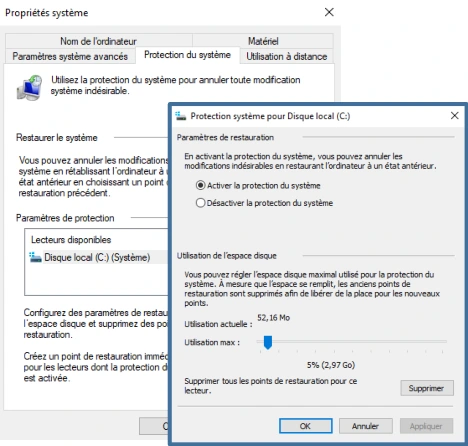
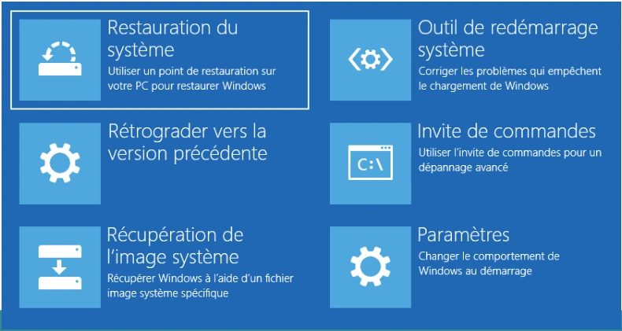

Transcription du document du dossier TSSR, adaptée à une lecture Web. Les compléments pédagogiques figurent dans leur onglet distinct.
Systèmes clients Microsoft — Module 10.
| Outil | Utilisation |
|---|---|
| Gestionnaire de tâches | Processus, services, performances processeur et mémoire. |
| Observateur d’évènements | Contient tous les évènements enregistrés par le système. |
| Moniteur de ressources | Affichage détaillé pour les quatre composants principaux. |
| Analyseur de performances | Affichage des performances à partir de compteurs. |
| Outil | Utilisation |
|---|---|
| Historique de fiabilité | Vue synthétique de l’état de santé du système dans le temps. |
| Observateur d’évènements | Les évènements sont mémorisés dans des journaux, fichiers de 20 Mo par défaut. |
| Analyseur de performances | Permet de planifier des compteurs dans des plages horaires pour une analyse a posteriori. |
Tel un journal, enregistrement des modifications du système :
sysdm.cpl.
shutdown /r /o.Restauration du système ; outil de redémarrage système ; rétrograder vers la version précédente ; invite de commandes ; récupération de l’image système ; paramètres.

| Option | Détails du support |
|---|---|
| Restauration du système | Utilisation d’un point de restauration système. Privilège d’administration requis. |
| Récupération de l’image système | Utilisation d’une sauvegarde de l’image système valide « si elle existe ». Média source requis : DVD, disque dur, etc. |
| Invite de commandes | Pour utiliser des outils de diagnostic ou de réparation ; cmd exécutée en tant qu’administrateur. |
| Rétrograder vers la version précédente | Si Windows 10 est une MAN, possibilité de retrouver Windows 7 ou Windows 8.1 source. Impossibilité de rétrograder vers la build Windows 10 précédente. |
| Paramètres | Redémarrage du poste et choix de démarrage spécifique : mode sans échec ; activer le mode vidéo basse résolution ; désactiver le contrôle obligatoire des signatures de pilotes… |
| Outil de redémarrage système | Reconstruit/répare le MBR éventuellement manquant ou corrompu ; reconstruit/répare le magasin BCD. |